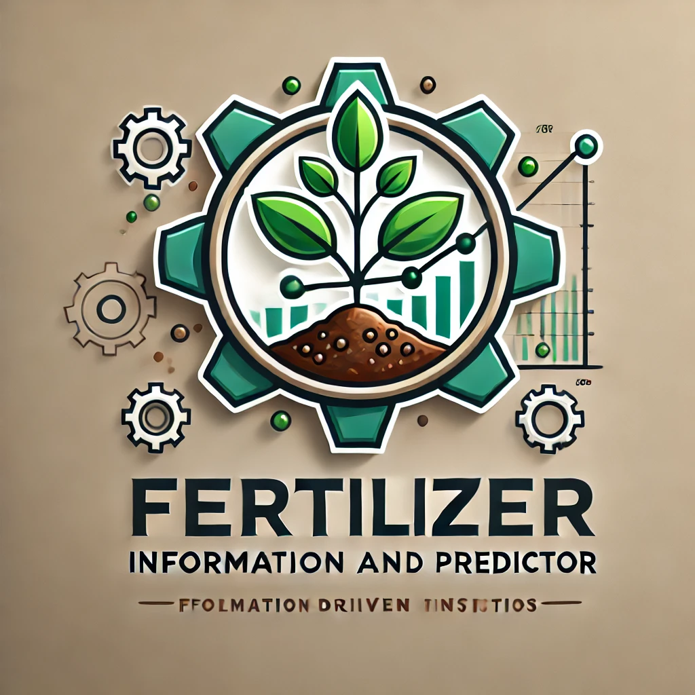

Fertilizer Predictor / ఎరువుల సూచకుడు
Select Crop Type / పంట రకం ఎంపిక చేయండి:
Corn / మొక్కజొన్న
Wheat / గోధుమ
Paddy / వరి
Soybean / సోయా బీన్
Potato / ఆలుకు
Tomato / టమోటా
Enter Soil pH / నేల pH నమోదు చేయండి:
Enter Land Area (in acres) / భూమి విస్తీర్ణం నమోదు చేయండి (ఎకరాల్లో):
Get Recommendations / సూచనలను పొందండి